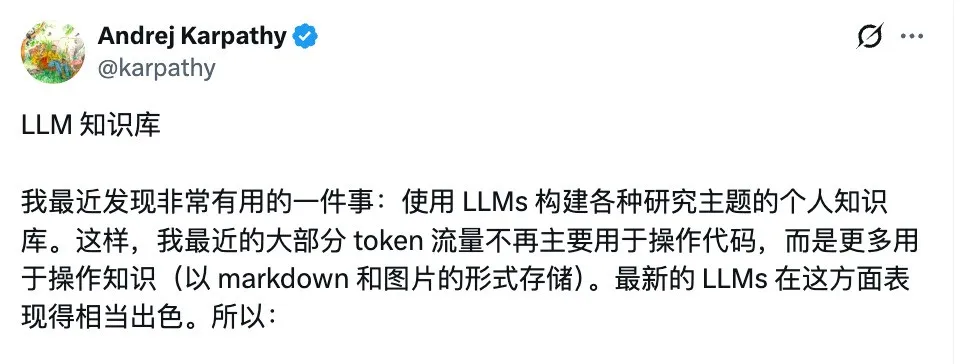
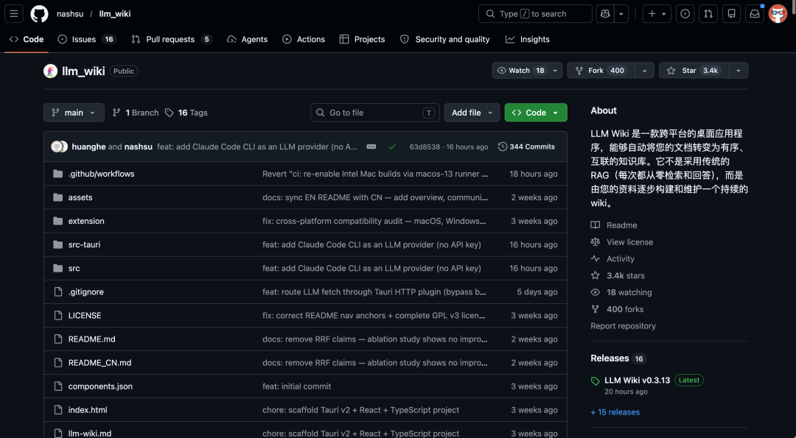
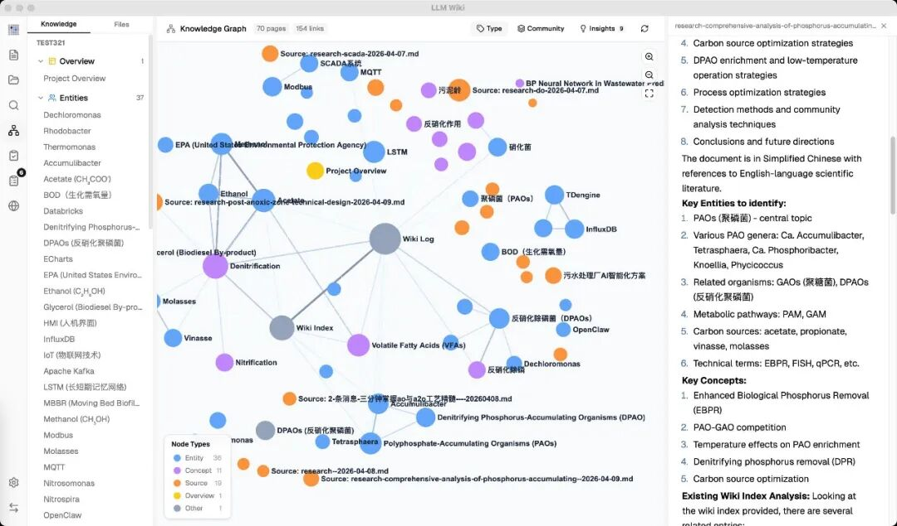
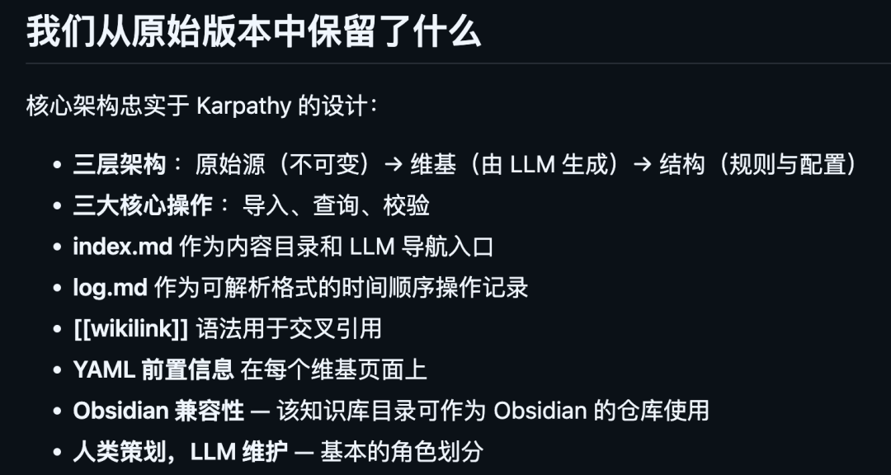
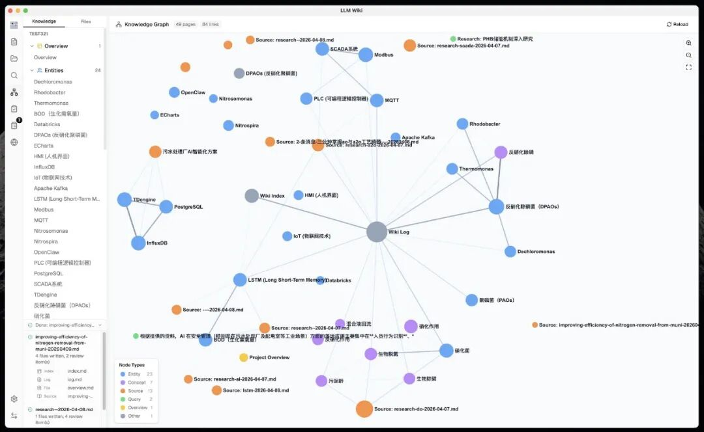
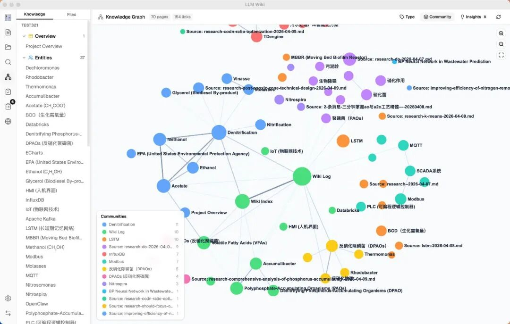
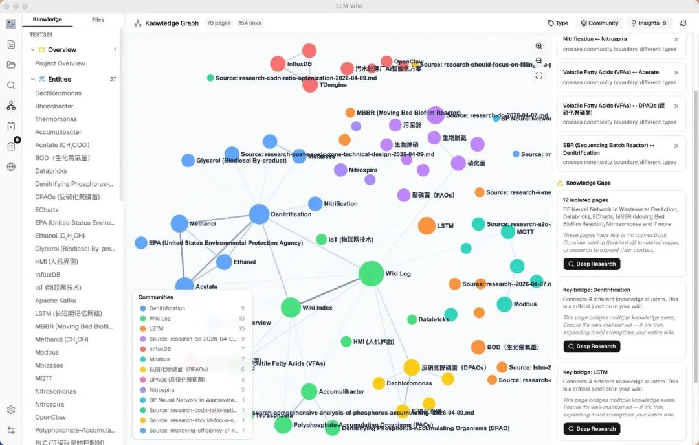
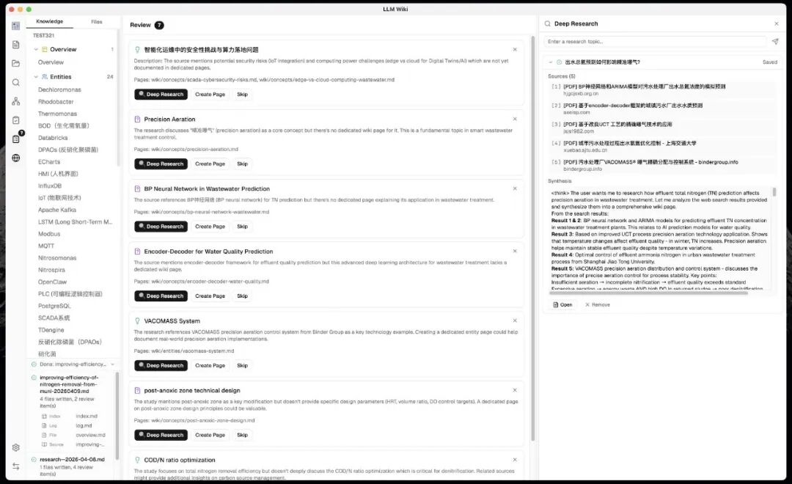
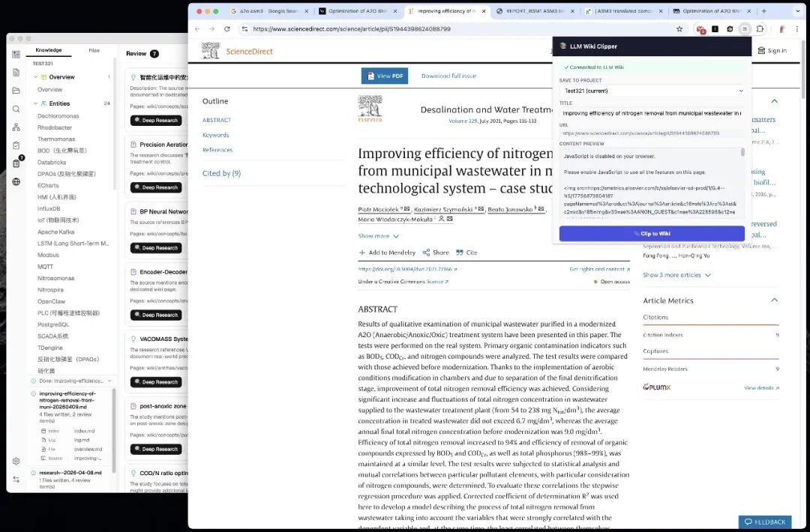
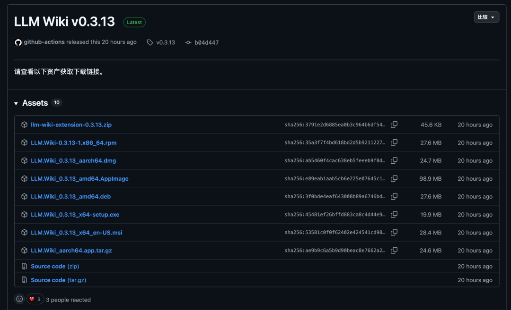

前阵子写了一篇关于 Karpathy 的 LLM Wiki 理念的文章，讲的是用 LLM 当知识工程师，帮你持续维护一个 Markdown 知识库。

当时文章里提到 GitHub 上已经有人在基于这个理念做具体实现了。
其中有一个项目卷得特别猛。
叫 LLM Wiki，现在已经 3300 多 Star 了。

不是简单的命令行工具或者 Claude Code Skill，直接做了一个跨平台的桌面应用。
功能做得非常扎实，比 Karpathy 原版 Gist 的设想丰富太多了。
今天就来看看这个开源项目。
01
一句话说清楚这是什么
LLM Wiki 是一个跨平台桌面应用，你把文档丢进去，它自动帮你生成一个结构化的、互相链接的个人 Wiki 知识库。

和传统 RAG 方案不同，它不是每次提问都从原始文档重新检索。
LLM 先把你的文档吃透，生成 Wiki 页面、建立交叉引用、标注矛盾点，后续提问直接在 Wiki 上做。
知识编译一次，持续保持最新。
这个项目就是基于 Karpathy 的 Gist 做的具体实现，但功能远超原版设想，加了知识图谱、深度研究、网页剪藏、向量搜索这些能力。
目前斩获 3300+ Star。

开源地址：https://github.com/nashsu/llm_wiki02
两步链式思考录入
这是整个项目最核心的设计之一。
原版 Gist 的思路是让 LLM 读文档的同时写 Wiki，一步到位。这个项目把它拆成了两步。
第一步，分析。
LLM 先通读你的文档，提取关键实体、概念、论点，找和已有 Wiki 内容的关联，发现矛盾和张力，然后给出结构化的分析结果。
第二步，生成。
LLM 拿着分析结果，才开始写 Wiki 页面。生成摘要页、实体页、概念页，更新索引，建立交叉引用，标注需要人工判断的事项。
拆成两步的好处是质量明显更高。让 LLM 先想清楚再动手写，比边想边写效果好得多。
一个来源录入进去，可能牵动 10 到 15 个 Wiki 页面的更新。LLM 会自动把新知识和已有知识网络串联起来。
还有个很实用的细节：SHA256 增量缓存。
每个文件在录入前会算哈希，没改过的文件自动跳过，不用每次都让 LLM 重新处理一遍，省 token 也省时间。
持久化队列也做得不错，崩了重启能接着跑，失败自动重试 3 次。活动面板能实时看到每个文件的处理进度。
03
知识图谱可视化
原版 Gist 只提到了用 wikilinks 做交叉引用，基本上就是文本链接。
这个项目直接做了一个完整的知识图谱可视化和关联引擎。

它用四个维度来衡量两个 Wiki 页面之间的关联程度：
可视化用的是 sigma.js + ForceAtlas2 布局。
节点颜色可以按页面类型或者社区聚类来着色，节点大小按链接数量缩放。
鼠标悬停的时候，关联节点保持高亮，其他节点变暗，边上还会显示关联分数。
还集成了 Louvain 社区发现算法，能自动识别出知识集群。
你导入了一堆文档之后，它能告诉你你的知识自然形成了哪几个主题聚类，每个聚类的内聚程度如何。
04
图谱洞察，这个功能最有意思
这是原版完全没有的，但我觉得是整个项目最有价值的部分。
系统会自动分析图谱结构，给你两种洞察。
一种是意外关联。
跨社区的、跨类型的、意料之外的连接。比如你分别录入了两批看起来毫不相干的资料，图谱里突然出现了一条连接它们的边。
这种发现往往是认知突破的起点。
另一种是知识缺口。
它会找出几乎没有连接的孤立页面、内部交叉引用太少的稀疏社区、同时连接三个以上集群的桥接节点。
每个缺口旁边都有个深度研究按钮，点一下就能让 LLM 自动去网上搜资料补全。
从发现缺口到补齐缺口，基本全程自动。


05
深度研究，知识库会自己补全自己
当系统发现知识缺口后，LLM 会自动生成搜索关键词，调用 Tavily API 去网上搜索。
搜到的结果 LLM 会综合分析，写成一篇研究页面，直接写进 Wiki。
研究页面还会自动触发录入流程，提取出新的实体和概念，整合到已有的知识网络里。

相当于你的知识库会自己去发现缺口，然后自己上网查资料补全。
触发深度研究的时候，LLM 会先读 overview.md 和 purpose.md 来理解你的知识库是关于什么的，然后生成针对性的搜索词。
不是泛泛的关键词，而是根据你已有知识的上下文来精确定位。搜索前还会弹个确认框，你可以修改搜索主题和搜索词，觉得没问题再开始。
06
Chrome 网页剪藏
这个项目做了一个专门的 Chrome 扩展，用起来挺方便的。
在浏览器里看到什么好文章，点一下图标就搞定。
Readability.js 自动去掉广告、导航栏、侧边栏这些干扰内容，只保留正文，Turndown.js 转成干净的 Markdown。

剪藏的内容会自动发送到本地应用，触发录入流程，直接变成 Wiki 的一部分。
支持多项目选择，如果你同时维护好几个知识库，剪藏的时候可以选存到哪个。
即使应用没开着，扩展也能预览提取的内容，等你打开应用后再自动同步。
检索也做了不少优化
Karpathy 原版方案在中等规模下靠索引文件就够了，但知识库一大就不够用了。
LLM Wiki 搞了一套多阶段检索管线。
先分词搜索，中文做 CJK 二元组分词。
然后可选开向量语义搜索，通过 LanceDB 做近似最近邻检索，即使没有关键词重叠也能找到语义相关的页面。
再把搜索结果当种子节点，用关联度模型做 2 跳遍历发现更深层的关联。
上下文窗口可以配置，从 4K 到 1M tokens 都行。60% 给 Wiki 页面，20% 聊天历史，5% 索引，15% 系统提示。
官方说开向量搜索后整体召回率从 58.2% 提升到了 71.4%。
07
几个眼前一亮的细节
除了上面这些大模块，还有几个细节挺好的。
Purpose.md
这个项目加了 purpose.md，放目标、关键问题、研究范围。
LLM 每次录入和查询都会参考这个文件，你的知识库就有了一个明确的方向，不是漫无目的地堆砌。这个区分很妙。
异步审核
LLM 录入过程中遇到拿不准的事情，会标记到审核队列里，不阻塞主流程。
你什么时候有空什么时候看，每个审核项带着预生成的操作选项和搜索查询。
删一个资料文件，系统自动找它的 Wiki 摘要页、引用了它的实体页面、索引条目、失效链接，全部清理干净。
被多个资料共享的实体页面不会被误删，只会从 sources 列表里移除。
多格式支持
PDF、DOCX、PPTX、Excel、图片、音视频都能导入。PDF 用 Rust 解析，性能很好。
完全兼容 Obsidian。
生成的 Wiki 目录就是标准的 Obsidian Vault，自动生成 .obsidian/ 配置。Obsidian 当查看器，LLM Wiki 当编辑器，两个工具各司其职。
08
怎么上手
GitHub Releases 页面有预编译安装包：

链接：https://github.com/nashsu/llm_wiki/releases/tag/v0.3.13装好之后的流程：
Chrome 扩展的安装也很简单。
打开 chrome://extensions，开启开发者模式，加载已解压的扩展程序，选择项目里的 extension/ 目录就行。
上次写那篇文章的时候，Karpathy 的理念还停留在抽象的方法论层面。
当时虽然已经有人在 GitHub 上做实现了，但大多是命令行工具或者 Claude Code 的 Skill，用起来还是有一定门槛。
这个项目直接做成了一个桌面应用，降低了使用门槛。普通用户也能上手，不需要折腾命令行和 Agent 配置。
而且它不是简单地照搬原版 Gist 的思路，在知识图谱、深度研究、网页剪藏、向量搜索这些方面都有实质性的扩展。
迭代速很快。
这也印证了 Karpathy 自己说的：在 Agent 时代，你分享思路，别人让各自的 Agent 去定制化搭建就行了。
知识的复利增长，这个项目让 Karpathy 的构想变成了现实。
09
点击下方卡片，关注逛逛 GitHub
这个公众号历史发布过很多有趣的开源项目，如果你懒得翻文章一个个找，你直接关注微信公众号：逛逛 GitHub ，后台对话聊天就行了：